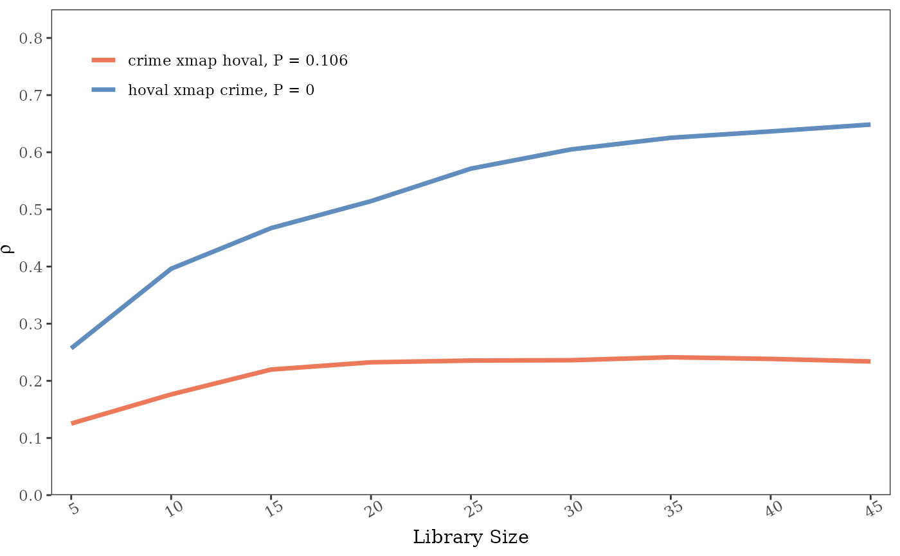

geographical convergent cross mapping
Usage
# S4 method for class 'sf'
gccm(
data,
cause,
effect,
libsizes,
E = 3,
tau = 1,
k = E + 2,
theta = 1,
algorithm = "simplex",
lib = NULL,
pred = NULL,
nb = NULL,
threads = detectThreads(),
parallel.level = "low",
bidirectional = TRUE,
detrend = TRUE,
progressbar = TRUE
)
# S4 method for class 'SpatRaster'
gccm(
data,
cause,
effect,
libsizes,
E = 3,
tau = 1,
k = E + 2,
theta = 1,
algorithm = "simplex",
lib = NULL,
pred = NULL,
threads = detectThreads(),
parallel.level = "low",
bidirectional = TRUE,
detrend = TRUE,
progressbar = TRUE
)Arguments
- data
observation data.
- cause
name of causal variable.
- effect
name of effect variable.
- libsizes
number of spatial units used in prediction.
- E
(optional) embedding dimensions.
- tau
(optional) step of spatial lags.
- k
(optional) number of nearest neighbors used in prediction.
- theta
(optional) weighting parameter for distances, useful when
algorithmissmap.- algorithm
(optional) prediction algorithm.
- lib
(optional) libraries indices.
- pred
(optional) predictions indices.
- nb
(optional) neighbours list.
- threads
(optional) number of threads to use.
- parallel.level
(optional) level of parallelism,
loworhigh.- bidirectional
(optional) whether to examine bidirectional causality.
- detrend
(optional) whether to remove the linear trend.
- progressbar
(optional) whether to show the progress bar.
Value
A list
xmapcross mapping results
varnamenames of causal and effect variable
bidirectionalwhether to examine bidirectional causality
References
Gao, B., Yang, J., Chen, Z. et al. Causal inference from cross-sectional earth system data with geographical convergent cross mapping. Nat Commun 14, 5875 (2023).
Examples
columbus = sf::read_sf(system.file("case/columbus.gpkg", package="spEDM"))
# \donttest{
g = gccm(columbus,"hoval","crime",libsizes = seq(5,45,5),E = 6)
#>
Computing: [========================================] 100% (done)
#>
Computing: [========================================] 100% (done)
g
#> libsizes hoval->crime crime->hoval
#> 1 5 0.1301861 0.2642894
#> 2 10 0.1762769 0.3961522
#> 3 15 0.2197481 0.4672470
#> 4 20 0.2324435 0.5144297
#> 5 25 0.2354728 0.5713321
#> 6 30 0.2360934 0.6048914
#> 7 35 0.2412944 0.6253026
#> 8 40 0.2383788 0.6364897
#> 9 45 0.2339483 0.6484721
plot(g, ylimits = c(0,0.85))

# }